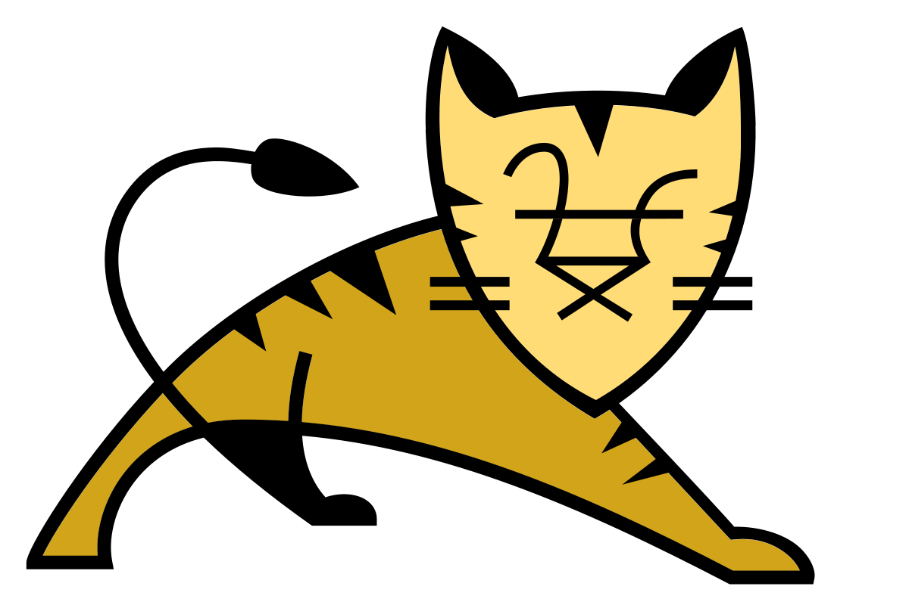

Apache Tomcat, often referred to as Tomcat Server, is an open-source Java Servlet Container developed by the Apache Software Foundation.
TOMCAT
Tomcat is an application server from the Apache Software Foundation that executes Java servlets and renders Web pages that include Java Server Page coding. Described as a "reference implementation" of the Java Servlet and the Java Server Page specifications, Tomcat is the result of an open collaboration of developers and is available from the Apache Web site in both binary and source versions. Tomcat can be used as either a standalone product with its own internal Web server or together with other Web servers, including Apache, Netscape Enterprise Server, Microsoft Internet Information Server (IIS), and Microsoft Personal Web Server. Tomcat requires a Java Runtime Enterprise Environment that conforms to JRE 1.1 or later.
Components[edit]
Tomcat 4.x was released with Catalina (a servlet container), Coyote (an HTTP connector) and Jasper (a JSP engine).
Catalina
Catalina is Tomcat's servlet container. Catalina implements Sun Microsystems's specifications for servlet and JavaServer Pages (JSP). In Tomcat, a Realm element represents a "database" of usernames, passwords, and roles (similar to Unix groups) assigned to those users. Different implementations of Realm allow Catalina to be integrated into environments where such authentication information is already being created and maintained, and then use that information to implement Container Managed Security as described in the Servlet Specification.[3]
Coyote
Coyote is a Connector component for Tomcat that supports the HTTP 1.1 protocol as a web server. This allows Catalina, nominally a Java Servlet or JSP container, to also act as a plain web server that serves local files as HTTP documents.[4]
Coyote listens for incoming connections to the server on a specific TCP port and forwards the request to the Tomcat Engine to process the request and send back a response to the requesting client. Another Coyote Connector, Coyote JK, listens similarly but instead forwards its requests to another web server, such as Apache, using the JK protocol.[5] This usually offers better performance.[citation needed]
Jasper
Jasper is Tomcat's JSP Engine. Jasper parses JSP files to compile them into Java code as servlets (that can be handled by Catalina). At runtime, Jasper detects changes to JSP files and recompiles them.
As of version 5, Tomcat uses Jasper 2, which is an implementation of the Sun Microsystems's JSP 2.0 specification. From Jasper to Jasper 2, important features were added:
JSP Tag library pooling - Each tag markup in JSP file is handled by a tag handler class. Tag handler class objects can be pooled and reused in the whole JSP servlet.
Background JSP compilation - While recompiling modified JSP Java code, the older version is still available for server requests. The older JSP servlet is deleted once the new JSP servlet has finished being recompiled.
Recompile JSP when included page changes - Pages can be inserted and included into a JSP at runtime. The JSP will not only be recompiled with JSP file changes but also with included page changes.
JDT Java compiler - Jasper 2 can use the Eclipse JDT (Java Development Tools) Java compiler instead of Ant and javac.
Three new components were added with the release of Tomcat 7:
Cluster
This component has been added to manage large applications. It is used for load balancing that can be achieved through many techniques. Clustering support currently requires the JDK version 1.5 or higher.
High availability
A high-availability feature has been added to facilitate the scheduling of system upgrades (e.g. new releases, change requests) without affecting the live environment. This is done by dispatching live traffic requests to a temporary server on a different port while the main server is upgraded on the main port. It is very useful in handling user requests on high-traffic web applications.[6]
Web application
It has also added user- as well as system-based web applications enhancement to add support for deployment across the variety of environments. It also tries to manage sessions as well as applications across the network.
Tomcat is building additional components. A number of additional components may be used with Apache Tomcat. These components may be built by users should they need them or they can be downloaded from one of the mirrors.[7]
Features
Tomcat 7.x implements the Servlet 3.0 and JSP 2.2 specifications.[8] It requires Java version 1.6, although previous versions have run on Java 1.1 through 1.5. Versions 5 through 6 saw improvements in garbage collection, JSP parsing, performance and scalability. Native wrappers, known as "Tomcat Native", are available for Microsoft Windows and Unix for platform integration.
Tomcat 8.x implements the Servlet 3.1 and JSP 2.4 Specifications. [9]Apache Tomcat 8.5.x is intended to replace 8.0.x and includes new features pulled forward from Tomcat 9.0.x. The minimum Java version and implemented specification versions remain unchanged.[10]
History
Tomcat started off as a servlet reference implementation by James Duncan Davidson, a software architect at Sun Microsystems. He later helped make the project open source and played a key role in its donation by Sun Microsystems to the Apache Software Foundation. The Apache Ant software build automation tool was developed as a side-effect of the creation of Tomcat as an open source project.
Davidson had initially hoped that the project would become open sourced and, since many open source projects had O'Reilly books associated with them featuring an animal on the cover, he wanted to name the project after an animal. He came up with Tomcat since he reasoned the animal represented something that could fend for itself. Although the tomcat was already in use for another O'Reilly title,[11] his wish to see an animal cover eventually came true when O'Reilly published their Tomcat book with a snow leopard on the cover in 2003.[12]
s